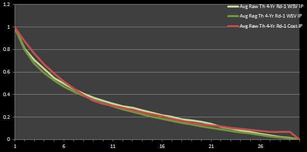
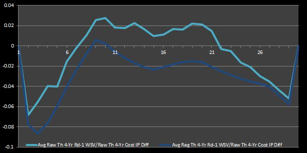
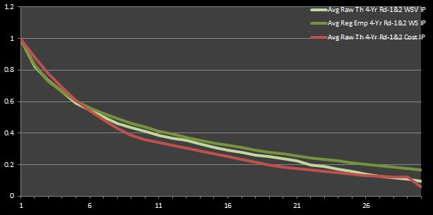
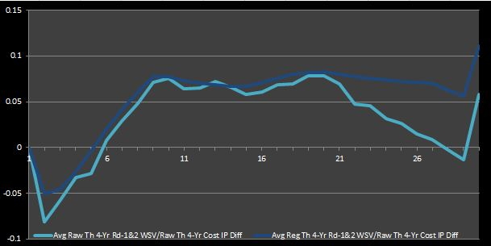
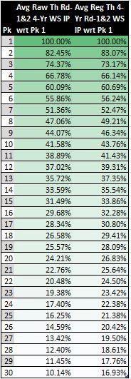
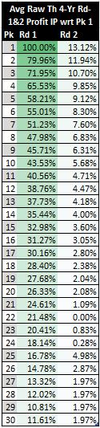
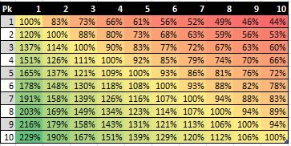
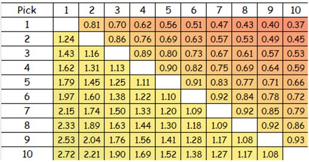

6 Indifferent Probability and NBA Draft Pick Value, Cont.
In this chapter I will continue where I left off in my prior discussion of the concept of indifferent probability (IP) and its application to the NBA draft. You may recall that we have only evaluated first-round draft slots up to this point because the contracts of second-round picks is non-deterministic, as I discussed in my chapter on the big-picture value of NBA draft picks. Nevertheless, I was able to answer my (re-stated) “second” big question about NBA draft pick value (“At which draft slots does the expected basketball production outperform the contractual obligation the most?”), which I brought up in another chapter. I found that, when considering only first round picks, the picks in the middle of the round are most cost-effective.
Now, if I attempt to model second-round picks and re-calculate IPs, I can provide a more realistic answer to the “third” question (“What is the relative trade value of picks?”) that I asked in a previous chapter. Furthermore, with these updated IP values I can re-evaluate my conclusion about the cost-effectiveness of mid-first-round picks. I attempt to do both of these tasks in this chapter.
6.1 A Second Look at the Second Round
Perhaps you believe that my prior conclusion about the value to be had with mid-first round picks was not extremely convincing. As a point of reference, I have reproduced the graphs that I led me to this conclusion in Figures 1 and 2.
To make my prior analysis more absolute, I need to try to incorporate the value, cost, and profit of second-round picks so that the desirability of first-round picks is_ enhanced and more closely matches reality. I have simply looked at top 30 picks in isolation so far. However, if I can model second-round picks like I have modeled first-round picks up to this point, I can (hopefully) get a more accurate perspective of the first half of the draft.
Figure 1: Average Theoretical Four-Year First-Round WSV and Cost IPs
Figure 2: Average Theoretical Four-Year First-Round WSV to Cost IPDifferentials
The truth is that, even if second-round picks can generate an enormous amount of profit by producing a higher-than-expected number of win shares (WS) while playing on non-guaranteed and lower-paying salaries, very few of picks after the top 30 ever become much more than an acceptable role player at best. With this fact in mind, we can better contextualize the fact that top 30 picks, even if they do cost more than second-round picks and can sometimes become busts, have historically generated more profit than second-round picks. Therefore, using the worst of the first-round picks as a baseline for calculations (as we have done so far) somewhat depreciates the value and profitability of the other picks because the baseline is higher than it should be.55
How do we model second-round picks? To begin, I can start with WS and then translate them to a monetary value just as we did before. Getting empirical WS for bottom 30 picks is simple, and finding their theoretical counterparts is simply a matter of identifying the smallest 30 WS values when re-sorting each round in my 1995-2012 sample size by WS instead of pick. Converting WS to win shares value (WSV) is also the same as before.56
Without looking up the contracts of all rookies in the drafts since 1995 (as I avoided doing before), I can’t actually get the true empirical four-year cost of drafted players. That’s not a such big deal for first-round picks because their contracts follow a fairly predictable pattern. I can say disregard the importance of exceptions to this pattern by arguing that all of my analysis is meant to reflect the expectations of a team going into the draft. In other words, odd cases, such as when first-round busts are released before the third or fourth year of their contracts, should not be modeled explicitly, even if they are possible.57
For second-round picks, I will make the assumption that they earn league-minimum salaries guaranteed over the course of four years. In reality, the most common case is that bottom 30 picks sign one- or two-year deals for minimum or near minimum salary. However, this occurrence is not the most common by a definitively wide margin, and many other possibilities have been observed historically. For example, opportunities can vary from a contract with no guarantees after the first year.58
Finally, with that huge assumption about player salaries out of the way, calculating profit is just as easy as it before.59
As a technical note, in order to distinguish these new total draft data sets, I use the descriptor “Rd-1&2” in my labels, or I simply don’t add “Rd-1”, as I have done before when identifying regressed values calculated with first-round data in isolation. Sometimes I do not use either of these descriptors with raw values (which encompasses all picks in the first and second draft rounds). When I use only the first-round raw data, then I simply take the top 30 data points; when I use both first- and second-round data, then I use all 60 data points in the draft set.
6.1.1 (Revised) Market Inefficiency
I’ve done a lot of talking without any new numbers or graphs to show. So, for the purpose of keeping you engaged, I will ease up on the words here. Figures 3 and 4 that follow are analogues to Figures 1 and 2 using the IPs calculated for the complete first- and second-round data.
Figure 3: Average Theoretical Four-Year First- and Second-Round WSV andCost IPs
Figure 4: Average Theoretical Four-Year First- and Second-Round WSV toCost IP Differentials
Figures 3 and 4 reaffirm what we inferred from Figures 1 and 2. That is, mid-round picks are true bargains (i.e. they are cost-effective relative to the rest of the picks). Furthermore, these graphs assert what most experts intuitively agree is true—late-round picks are also profitable. This observation isn’t necessarily implied by Figures 1 and 2. In fact, one could say that those graphs imply the opposite. However, this new deduction alludes to my rationale for re-doing the prior analysis focusing only on first-round data—as an NBA fan who has observed the game for a long time, my intuition told me that a conclusion that could not show that late first-round picks were bargain was not completely accurate. Thus, I felt obliged to try to account for the value and cost of second-round picks.
If you still aren’t convinced that mid-round picks represent bargains, you should look at the analysis done at 82games.com by Aaron Barzilai, which I summarized in a previous chapter. Figure 8 in his research, which I reproduce below, captures the same idea that I present here in my Figure 3 (but no so much my Figure 1, which only graphs first-round data). Interestingly, Barzilai found that the last pick in the first round is worth about 20% of the first pick, while I calculated that it was around 16%. It is very reassuring to see that my number closely matches his, despite the relatively large assumptions I have made about the cost of second-round picks.
Even more interestingly, Barzilai found that the 9th pick represents the greatest market inefficiency, as I have defined it in my discussion. Likewise, I found that the 9th picks had the largest IP differentials averaged across all four IP differential data sets shown in my Figures 2 and 4. Perhaps this is just a coincidence. Nevertheless, it is nice to verify that my analysis seems to be valid.
Let me say one more thing about late first-round picks, even though I’m not exactly sure how to prove it definitively or in some easy-to-understand manner. I would argue that the profitability of__ late first-round picks__ derives more from their low cost relative to the theoretical talent-level available at those slots, while the profitability of mid-first round picks arises more from greater talent relative to the cost.
Before moving on, I should note that recalculating everything up to this point means that I now have 24 data sets (and 24 corresponding sets of IPs): 8 for raw empirical and theoretical WS, WSVs, cost, and profit (which encompass all 60 data points for a given draft, but may be cut off at the midpoint in analysis that only looks at first-round picks); 8 for their counterparts regressed using only the top 30 data points; and 8 more regressed over all 60 data points. Just as before, the new first- and second-round regressed data sets have IPs that are consistent with themselves, so there are really only 12 unique sets of IPs.
6.1.2 NBA Draft Pick Trade Value
Even if you still aren’t convinced about the prior conclusions regarding which first-round picks are the most cost-effective relative to one another. the good news is that IPs can be used for other analysis. For example, I can determine the relative trade value of the right to owning a pick (before a player is selected at the slot) by using my sets of IPs. In other words, I can determine how much teams should be willing to trade one pick for another (or more).
For the sake of this analysis, I will only consider first-round picks in a given (arbitrary) year without any pick-related restrictions nor any knowledge of available players. Specifically, I am not going to try to account for the inflated value of picks in future drafts, the possibility of protected picks, nor experts’ evaluation of the incoming prospects.
As with calculating IPs, the calculations here are straightforward. All that needs to be done is to divide the IP of the pick(s) to be sent by that of the pick(s) to be received. I could use any one of our sets of IPs, but I will use the ones for raw and regressed theoretical first- and second-round WS. The rationale for this choice is the same as that for evaluating market inefficiencies, with the exception of using WS and instead of WSV. I have decided to use WS here because I feel that they correlate most closely with our notion of trade value. By this I mean to say that player talent and on-court production is typically the primary concern in (non-draft-related) trades, and the matching of salary obligations is the secondary concern. Furthermore, WS seems like the right choice to me because teams probably associate picks more strongly with the player and basketball production to be had, as opposed to the monetary value to be gained, in which case I might choose to use the IPs for WSV or profit.60
Figure 5 shows the raw and regressed theoretical WS IPs (in percentages) with respect to the first pick. The numbers calculated for each data set incorporates data for both rounds. (This distinction is important to note for the regressed data because we have regressed versions using only first-round data and a newer version that attempts to model the second round as well.)
Figure 5: First-Round Draft Pick Trade Value
Notably, the inclusion of second-round data prevents the data sets from decreasing to zero over the span of the top 30 picks. I would say that this first- and second-round model gives percentages that are more representative of the truth (in comparison to using only first-round data) because we cannot simply dismiss the value of second round picks altogether if we wish to make an effort to evaluate realistic possibilities regarding pick swaps. Even though the straight-up exchange of picks is not all too common (because draft trades typically also include non-rookie players), those that do occur often include second round picks. That is, a swap of first-round picks, even if it involves multiple picks from one side or future first-round picks, almost never happens.
In review of the numbers in Figure 5, I am inclined to believe that those in the second set—those using the regressed theoretical WS IPs—are more realistic. In particular, the 17% relative value of the 30th pick with respect to the top pick seems like a better estimate than the 10% estimate given by the raw data set, which just seems too deflated.
Moreover, if I were to have included the percent values for picks 31 to 60 in Figure 5, you would observe that the numbers continue to decrease monotonically. In light of this fact, we can deduce neither of these data sets seems to capture the belief of NBA analytical experts that high second-round pick represent bargains. They say that these picks, like mid-first round picks, generate greater profit relative to their cost because there is a non-trivial chance of selecting a relatively talented player at the top of the second round on a team-friendly contract that does not need to abide by the rookie wage scale.
Actually, I would have been surprised if I had seen the percentages take a small jump around picks 30 and 31 in the WS IPs scaled with respect to the first pick. I would only expect to see this phenomenon in the scaled WSV or__ profit IPs because these data sets account for monetary returns and cost__. In fact, this effect DOES _manifest in both the scaled raw empirical and theoretical first- and second-round profit IPs. Figure 6 shows the latter of these two data sets. (I do not show the former because it is relatively noisy).
Figure 6: First- and Second-Round Draft Pick Trade Value
Figure 6 makes it is evident that the two or three picks at the top of the second round are more desirable (in terms of cost efficiency) than the last couple of picks in the first round.61
Finally, I can look at the value of all picks relative to one another. Figure 7 shows the trade value of the top ten picks relative to one another in a matrix format.62
Figure 7: Top 10 Draft Pick Trade Value
I must say that my Figure 7 is inspired by a chart shown in an article by Wages of Wins writer Arturo Galletti meant to portray the same idea. I reproduce a cropped version of his figure below.
Figure 8: Arturo Galletti’s Top 10 Draft Pick Trade Value
If you compare our numbers for the top 10 picks, you can see that we come up with similar estimates. In actuality, we would come up with exactly the same numbers if we had used precisely the same method. As I noted in a previous chapter, Galletti simply calculates the quotient of the values for any given two picks to come up with their relative trade value. However, in my method, I first scale all the monetary values to a 0-to-1 unit-less basis before taking the quotient of any given two numbers. As I note there, I believe that my method for calculating relative values using IPs is superior because it does not result in negative values. Negative values do not have any meaning on a relative scale of magnitude.
The fact that Galletti and I are on the same page is not too surprising considering that we have very similar methodologies. However, our results are fairly different from the unit-less values that can be derived from the peak VORP numbers of Nylon Calculus’S Nick Restifo. (In case you missed it, I mentioned both Galletti’s and Restifo’s results on this topic in a previous chapter.
After translating Restifo’s peak VORP numbers to IPs, I can put his trade value numbers on equal ground with mine and those of Galletti. Figure 8 presents the results.

Figure 9: Nick Restifo’s Top 10 Draft Pick Trade Value
Clearly, his numbers deviate fairly significantly from mine and Galletti’s. This trend becomes even more extreme as the pick number increase beyond 10. However, as I discussed in that previous chapter, it is not really fair to compare the chart that can be derived from Galletti’s regressed “Net Actual Value” numbers (which are equivalent to my profit numbers translated to IPs and generate the exact same chart as the one I present in my Figure 7) and the chart that I derive from Restifo’s estimates. Mine and Galletti’s discount basketball production with cost, while Restifo’s measure basketball production only. Nevertheless, even after I account for the cost factor to put Galletti’s and Restifo’s numbers on the same basis, the relative trade value numbers still differ noticeably. Figure 9 shows Galletti’s basketball-production-only numbers that reflect the same idea as Restifo’s normalized values in Figure 8.

Figure 10: Arturo Galletti’s Top 10 Draft Pick Trade Value (Neglecting Cost)
The answer to the question of whose numbers are more accurate depend on your preference for basketball-production evaluation. Galletti and I use average empirical four-year wins produced (WP) and win shares (WS) respectively for our on-court value measurements, while Restifo employs best two-year VORP.
6.2 Final Thoughts
So, how much should teams be willing to trade for draft picks (in terms of other draft picks)? Unfortunately, my best answer is “it depends”. Anyways, there are so many other factors that can inflate or deflate trade values—such as a team’s current cap situation, the number of picks that it holds in the given year’s draft or in future drafts, etc.–that this question would be difficult to answer definitively without being very specific in its statement. For example, it would probably be better to ask something like “Given that the Boston Celtics have three first-round picks and three second-round picks in this draft, six more second-round picks in the next two drafts, and enough cap room to fit two maximum salary players on their roster, should they offer the Sacramento Kings a deal including their top three picks from this draft, as well as all of their second-round picks in the next two years, in return for DeMarcus Cousins?” Of course, even if I were to try to answer a question like this, whatever conclusion I come up with would be difficult to generalize.
Nevertheless, because this depreciation affects all top 30 picks relatively equally, it does not mean that any of our analysis should be disregarded. It is still valid because it is consistent with itself, even if it may not reflect reality with complete 100% accuracy.↩
If you recall, I simply multiplied the number of WS by the appropriate average four-year WSV. So far, so good. However, estimating cost is where things start to get ambiguous.↩
Anyways, these cases are captured by taking averages and regressions.↩
Danny Greenhas turned out to be a respectable role player after being waivedafter his rookie year with the Cleveland Cavaliers. to a more optimistic agreement to a longer-term deal (which often comes with some down-side such as team options to release the player after a certain number of years).↩
It’s just the difference of the WSV and cost. We can regress each set of these new “first- and second-round” data sets for WS, WSV, cost, and profit just as we did before for the “first-round” ones. As you will see, we can apply the broader two-round model on a case-by-case analysis for the rest of our analysis depending on where we judge its application is most appropriate, such as in identifying market inefficiencies and draft pick trade value.↩
In reality, the choice of WS over WSV is still somewhat arbitrary. Also, one can argue the importance of this choice is not all too significant because the majority of the sets of IP are very similar in their values, and the point of this analysis is just to introduce one of the many topics that can be investigated at a more granular level, given better research and insight.↩
As I indicated in a prior chapter , the 30th value is somewhat skewed by the fact that drafts prior to 2007 had only 29 teams. Also, the handful of values at the end of the second round are skewed for a less obvious reason. Often, the worst rookies in any given draft class can earn a negative amount of WS, so the sorting of players by descending WS, as is done with the theoretical data sets, can lead to some strange results. Moreover, because many years have had players drafted who never ended up playing in the NBA, there are simply not very many data points for the last couple of draft slots.↩
As a technical note, I use the regressed theoretical first- and second-round WS IPs about which I said I believed is the most accurate data set that I have to portray this concept.↩